WeClub
WeClub is an application that helps people find local sports clubs to join or challenges to motivate people to make a good change in their daily routine.
Project type:
Personal project
Scope:
User reserch
User interview
User flow
Design strategy
Wireframe
Prototype
My role:
UX/UI Designer
Duration:
2 months
July - August, 2022
Tools:
Figma
Marvel POP
Miro, Milanote
WHAT IS THE CONTEXT?
Many sports require more than two people to play games. Many of my
friends who moved to a new city have been trying to find a local
sports club to play the sports game, but didn’t know where or how
to find the clubs. I could relate to them as I had tried to find a
group of people to enjoy the same fitness activities.
Also, when I was starting to work out, it was difficult to
make it a daily routine. I have found other people also feel the
same because there’s nothing really pushing them to do so and no
tools to help them to keep motivating them.
THE PROBLEM
1. Finding a Local Sports Club
People who want to play sports have to find players with the same interest in their area. If they don’t have a network to meet other players, this can be difficult to accomplish.
2. Making a good habit (Challenge)
People find it difficult to create good habits or daily routines. Committing to a challenge provides the boost to start making a change. Doing a challenge with other people is a great way to keep people motivated and people are more likely to stick to their commitment.
THE SOLUTION
• Location based local sports clubs/activities finder (wherever location user wants) - to connect with people who share your interests.
• Feature to create sports clubs/activities.
• Challenges related to health and exercise.
• Feature to create own challenge.
WeClub is a mobile application that helps people find local sports clubs to join or start their own club. It allows people to connect with others with the same interest. Another feature is Challenge to motivate people to make a good change in their daily routine. The app provides challenges that are not overwhelming, but something manageable so that people feel like trying and not get discouraged. Joining a challenge will help people to get started and keep motivated by doing it with a supportive community.
DESIGN APPROACH
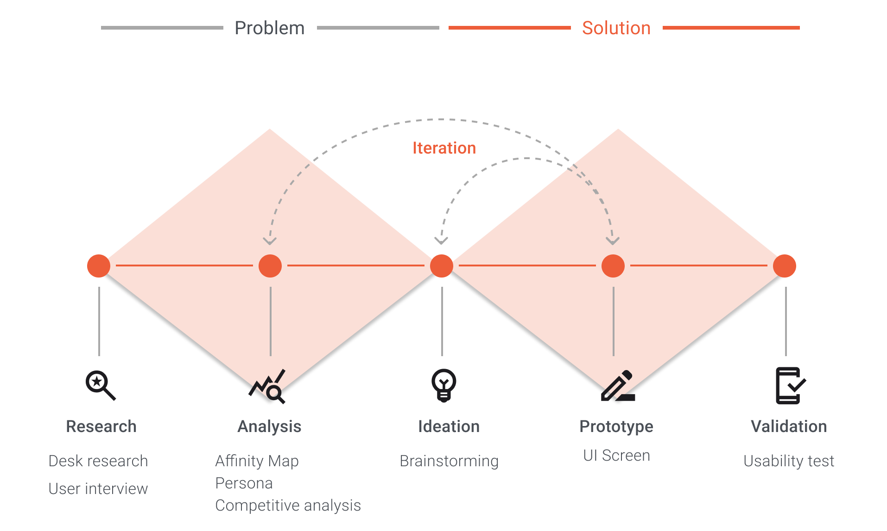SECONDARY RESEARCH
My original idea was to help people build a good routine/habit. To understand how to form a routine and the benefits of building a good routine, I did research through published reports and articles online.
KEY FINDINGS
Many people try to create a healthy habit or daily routine, but often fail. This suggests that creating a new habit or daily routine is difficult. Having people motivated to keep going with the challenge would be much helpful.
To make a daily routine:
1. Decide what needs to be in your routine
2. Set small goals.
3. Layout a plan.
4. Be consistent with time.
5. Make it fun!
PRIMARY RESEARCH
To better understand people’s recent behavior when trying to make a new habit/routine, I spoke with five individuals who were selected from a screener survey. Each interviewee participated in a 30 - 45 minute interview either in person or virtually over Zoom. They shared openly about their daily routines and experience with trying to build a good habit or daily routine.
USER INTERVIEW FINDINGS X 5 PEOPLE
Through the interviews, I learned not only what encourages or
discourages people when trying to make a new habit/routine,
but also discovered that four out of five interviewees recently
tried to find an activity group related to sports/fitness
activities that they were interested in.
Based on this new key finding, I decided to learn more about the experience of finding local sport clubs/fitness groups. I quickly moved on with the 2nd round of interviews with the same four people who tried to find sport clubs/fitness groups.
What people who play sports or enjoy fitness activities are looking for:
1. Finding the local sports clubs
People want easy ways to find local sports clubs and reach out.
2. Connecting with like-minded people
It is difficult to meet people who play the same sports or enjoy the same activities if people don’t have a network.
3. Motivation
People find it difficult to motivate themselves to start making a good habit and stay motivated.
4. A guidance for setting goals
People often don’t know how/what to start when building healthy habits/routines and need guidance for setting SMART goals: specific, measurable, achievable, relevant and time-bound objectives.
DEFINE
1. AFFINITY MAP
After gathering data from interviews, I visualized through affinity mapping to better understand the data and main pain points.
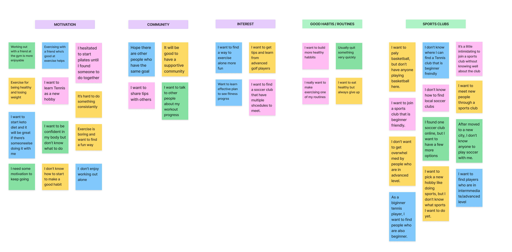2. EMPATHY MAP
To gain a deeper insight into potential users and ensure empathizing with the user’s experiences, I created an empathy map. This helped me keep the users in the center of the design process in next steps.
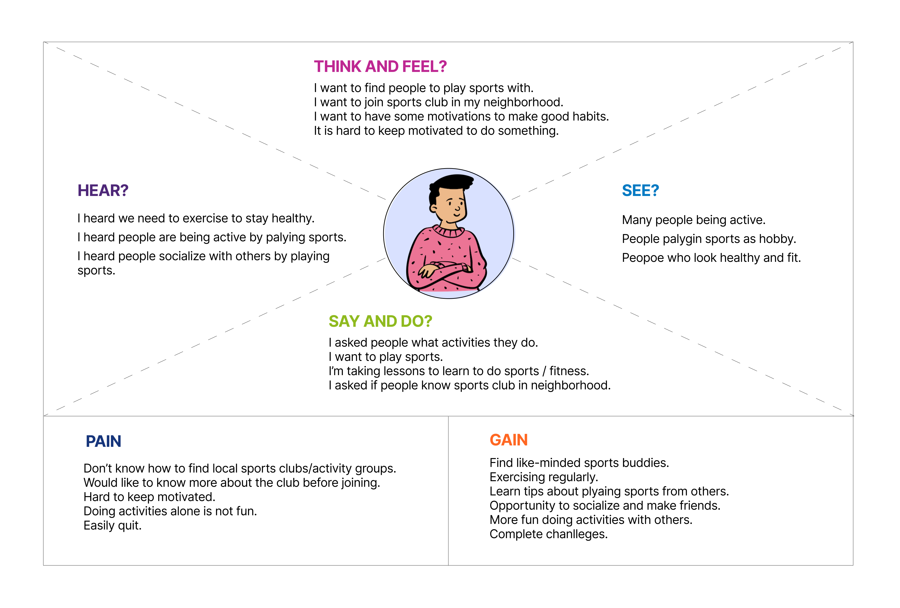USER INSIGHTS
Main pain points from my primary research:
1. People don’t know how to find local sports clubs/activity groups.
2. People struggle to keep motivated to make a good habit/daily routine.
3. People want to share their achievements and connect with the community of like-minded people.
THE PROBLEM RE-DEFINED
After gaining a solid sense of pain points and the wants, I decided to solve two problems:
1) Helping people to find local sports clubs/activity groups.
2) Helping people build good habits/routines.
OPPORTUNITY
1. How might we help people to find local sports clubs/fitness groups ?
2. How might we motivate people to create good habits or daily routines?
PERSONA
Keeping pain points and insights from interviews above in mind, I identified 2 types of users who could be our target users. While designing a solution, these 2 personas helped me keep the user’s needs in the center of the design process.
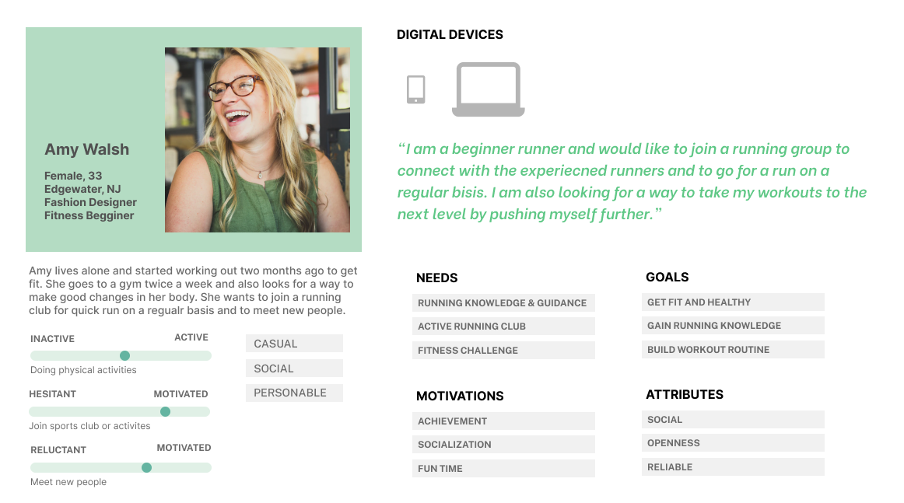 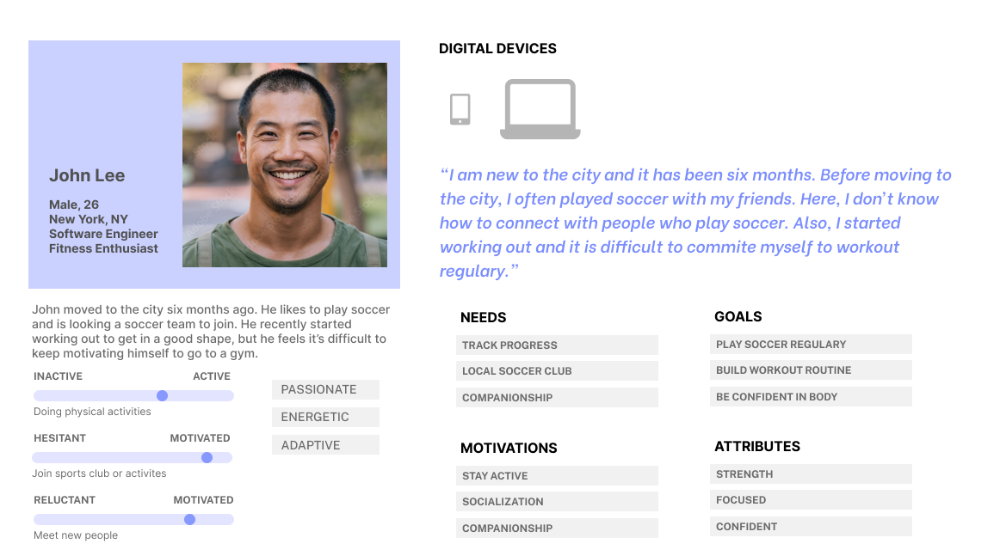KEY FINDING
Desirable factors for joining sports clubs or challenges:
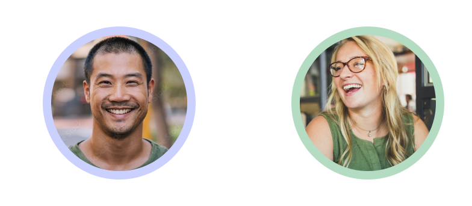1. SPORTS CLUB
NEEDS:
• Find a local sports club/activity group.
• Create social bonds and companionship with club members.
• Connect with other players who can share their knowledge and experience.
• Have a long-term incentive to play sports.
GOALS:
• Play sports on a regular basis.
• Participate in the group events.
• Earn knowledge and tips.
2. MAKING HABITS
NEEDS:
• Motivate themselves to complete challenges and make a good habit/routine.
• Explore challenges that they are interested in.
GOALS:
• Feel small successes and keep going.
• Stay making good changes and maintain a healthy lifestyle.
IDEATE
MVP
I created a Minimum Viable Product (MVP) to quickly validate a hypothesis about the solution.
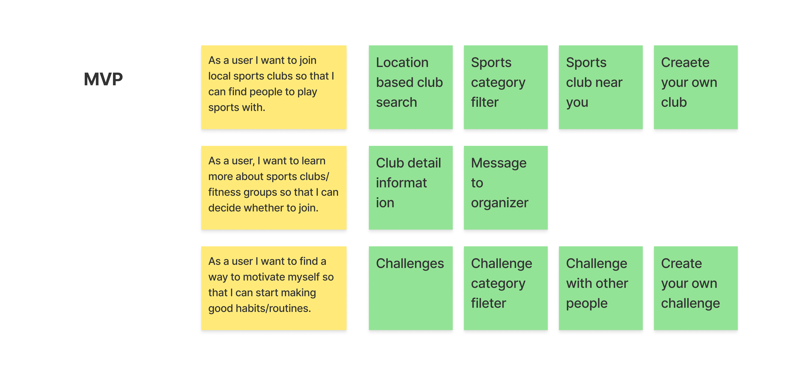SITE MAP
After identifying MVP, I created a sitemap. With a site map, I was able to envision the user flow easier to guide me in creating user flow.
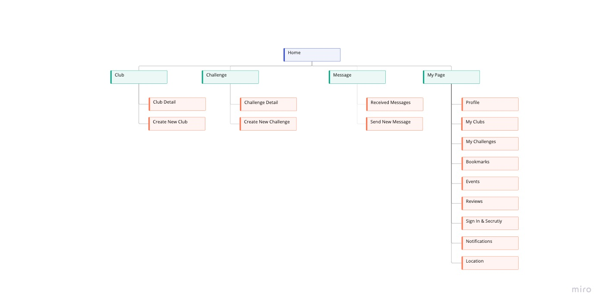USER FLOW - MOBILE APP
Considering all the ways users could navigate through an app, I created a user flow to identify the essential path.
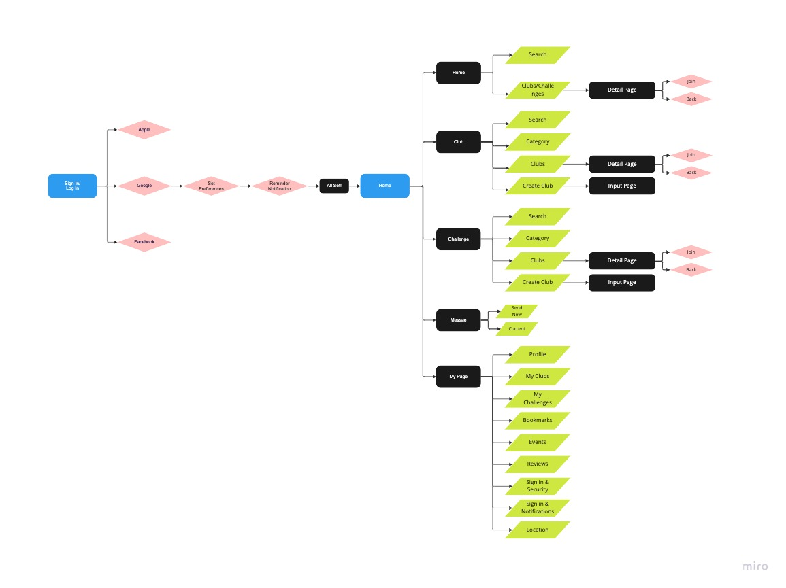DESIGN PRINCIPLES
• Make the exploration of clubs and challenges simple and easy.
• Create a knit community for like-minded people.
• Bonding and participation.
• Create a sense of achievement.
LOW-FI SKETCHING
I began the design process by quickly sketching out ideas for the red routes and turning them into a digital clickable prototype using the Marvel POP app.
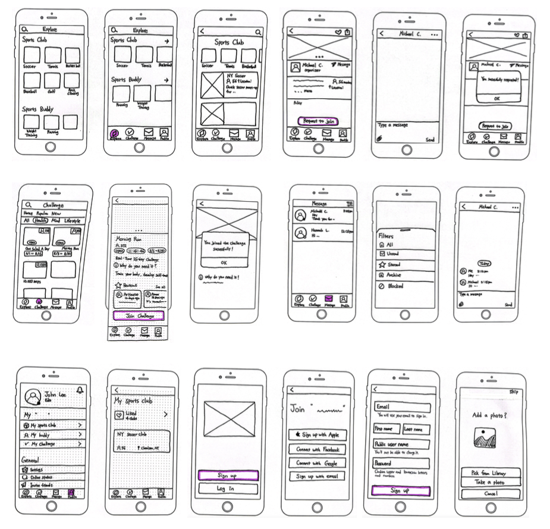GUERILLA USABILITY TESTING
I recruited 4 participants for moderated guerilla usability testing to get quick feedback on designs. It helped me to learn what aspects of my design need to be adjusted before moving on to wireframing.
Key findings from guerilla usability testing:
1. Improve legibility
2. Add Home screen showing both sports club & challenge
3. Prioritize important contents show on top
4. Confusing icon: “Like” button
WIREFLOW
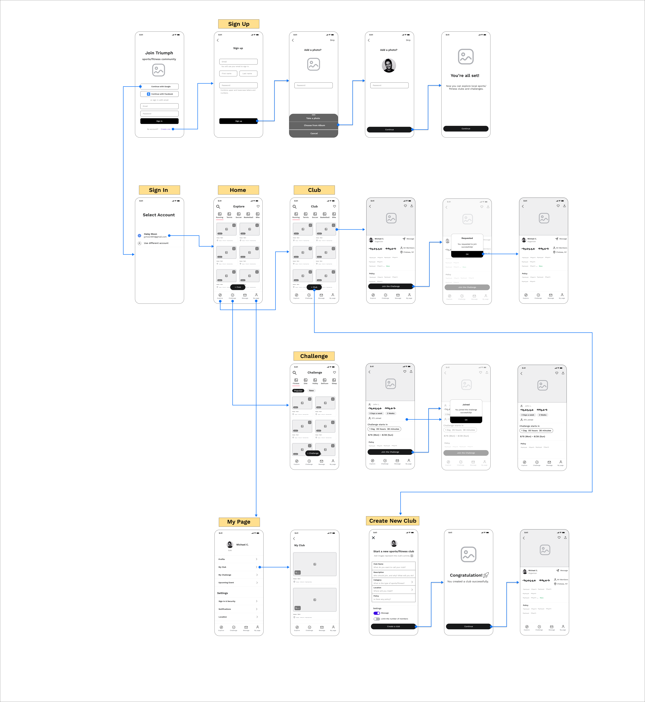UI STYLE
Colors are carefully selected considering color theory and emotional connotation. For the primary color, I opted for pink-red color that offers a sense of energy, fun, friendliness and promotes motivation with a positive attitude. I specifically picked pink-red color because it gives a softer feel than red. Green is the secondary color which is associated with life and growth. Green is used in limited areas. To create a simple, clean UI design, I tried to minimize the number of colors with hues and used more achromatic colors.
For good legibility, font size is at least 15 and over. I chose Roboto for the clean, modern font look and legibility. For a very large header, I chose Work Sans to add a little playful element, but still has the clean and modern look.
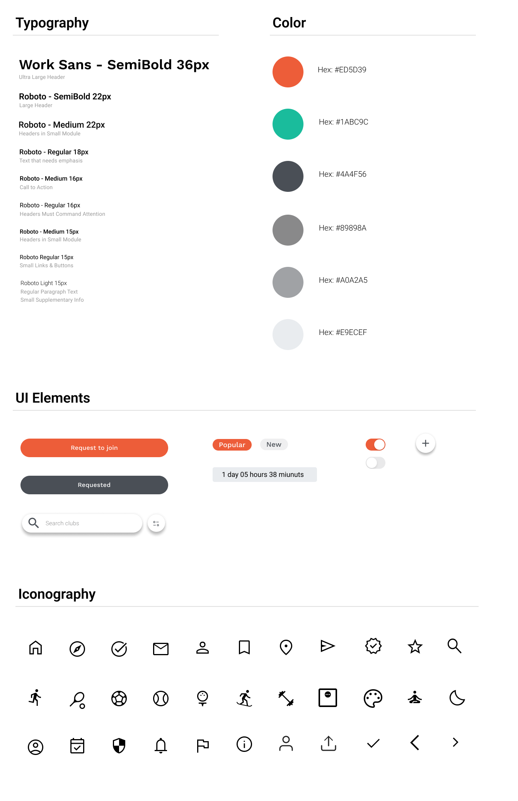PROTOTYPE
Prototype Version 1 with Main Screens:
USABILITY TESTING - 5 MODERATED TESTINGS
Key findings for the improvement:
1. Participants didn’t quickly decide what option to choose on the log-in page.
2. Challenge detail page lacked some information that participants wanted to know.
3. When creating a club, users wanted more settings.
4. Users use bookmark often, but it takes two (there was no direct bookmark navigation on every screen)
ITERATION
1. Improved onboarding process by updating the CTA buttons.
2. Added more information about challenges.
3. Added an image icon on creating a club page.
4. Made the club categories scroll horizontally for users to explore more categories.
2ND ROUND USABILITY TESTING
Through the 2nd round testing, I wanted to observe how users experienced the app with its iterations.
Iterations to consider:
1. Allow users to set up notifications to remind them to do the challenge or attend the club event.
2. Add the level of challenges showing how difficult the challenges are.
3. Add the recommended challenges for each user’s level.
FINAL PROTOTYPE
Clickable Prototype
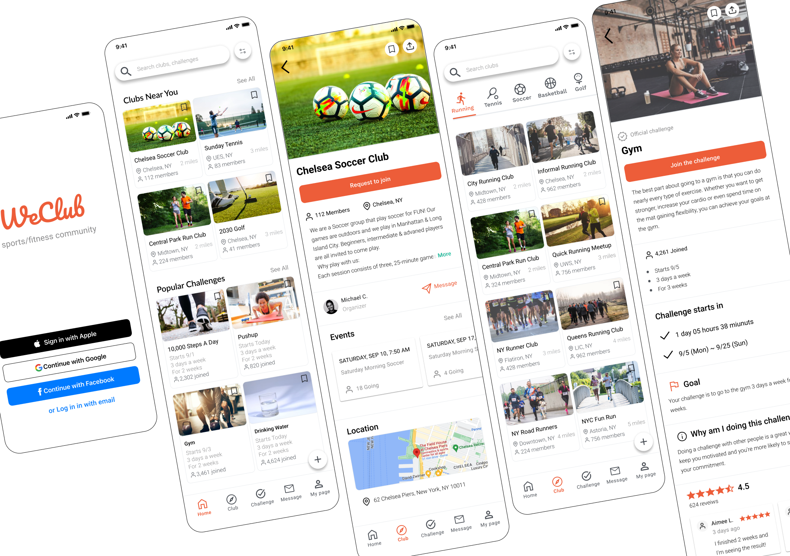 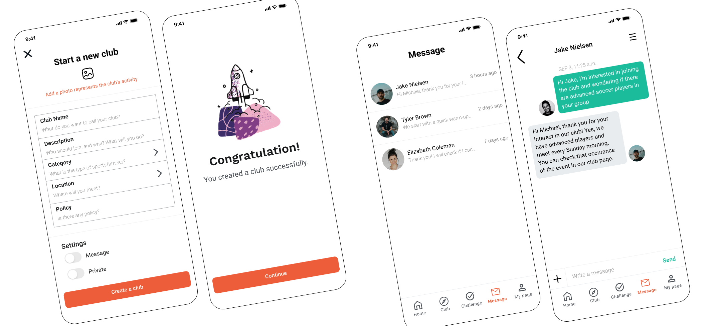 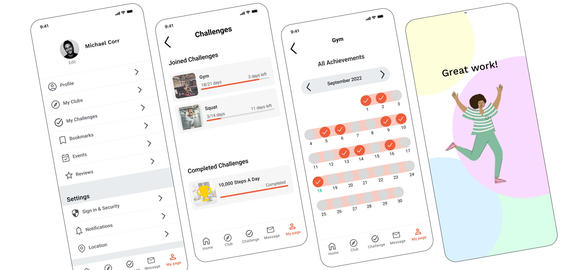MY NEXT STEP
My next step would be incorporating more gamification elements in rewarding to motivate users and visualize the progress. Creating some incentives for people who complete challenges would boost their motivation and give them more sense of achievement.
WHAT I LEARNED
I really enjoyed working on the capstone project “We Club” and seeing how this mobile service can impact people’s lives. It was very interesting to test what people would look for while using the app. WeClub is also a special project for me that resonates with my experiences. I always had difficulties in finding people who would do the same sports/fitness activities with me. By conducting user research, I have found that many people felt the same way I did. My intention is to respond to people’s wants to connect with other like-minded people and to get motivated to make changes for healthier lives. I believe that creating supportive communities will bring benefits to people’s lives.